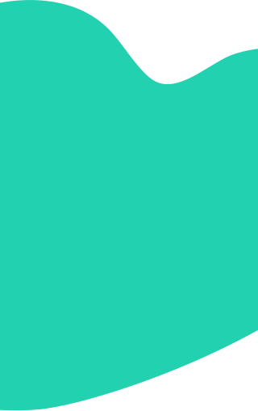
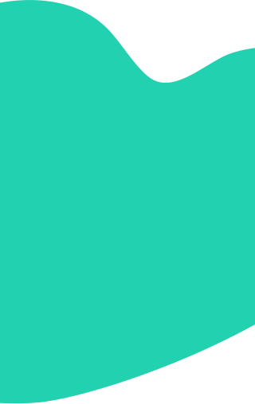

Digital Recognition
of Education, Skills
and Achievements
to advance your professional career
Have an organization? Tap here
What we do

Build Your Profesional Portfolio
NowAccredited works with institutions to help build your professional portfolio. Everyone of your accomplishments and achievements will be stored securely and privately on your NowAccredited account. organisation are able to upload accredited achievements to your profile or upload an official certificate that you have achieved. For example, Academic awards by colleges and universities, training courses or work achievements. This will stay on your professional profile for life. You can log in to your NowAccredited account and share specific certificates with an organisation or employer.

Professional Career and development
There's nothing quite like seeing how you have grown as a professional and what value you have brought to the organisation. Having a digital portfolio is excellent for career progression.
Futhermore, regardless of whether you're bad at recalling everything about communicating those achievements during an interview, the portfolio gives you simple way to refresh your memory, yet supplement what you're discussing. Proof, after all, helps potential clients or remployers distinguish between talk and results.
 

Expresses Your Professional Narrative in A captivating Way
Your professional portfolio can innovatively express the narrative and arc of your entire professional career, highlighting your achievements and abilities. Now Accredited portfolios can weave together your talents, strengths and core values in an integrated way with your education, experience, and passion projects.
Get Started
Who is NowAccredited for?
Anyone looking to build their
professional portfolio
Join our Kickstart and Training Programme
We are consistently on the lookout for partners who offer kickstart oppertunities and training courses. Joining our Kickstart and Training Programme will allow us to connect you with our partners who will refer students, graduates and jobseekers to your programme.